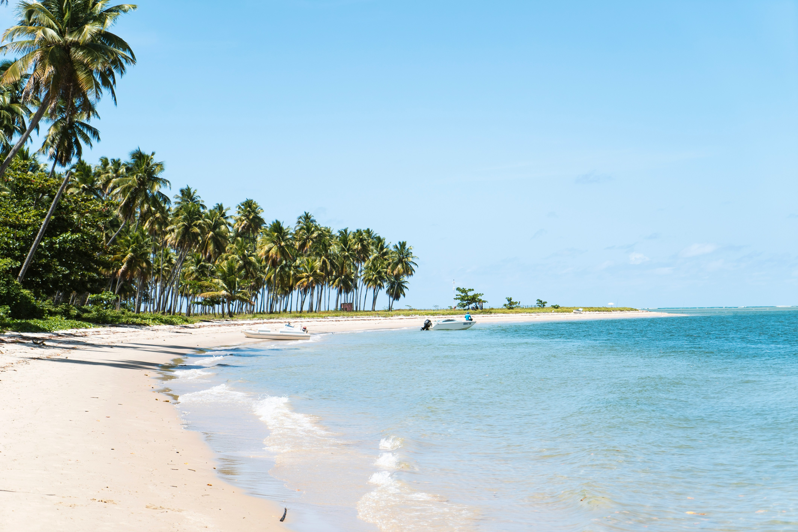
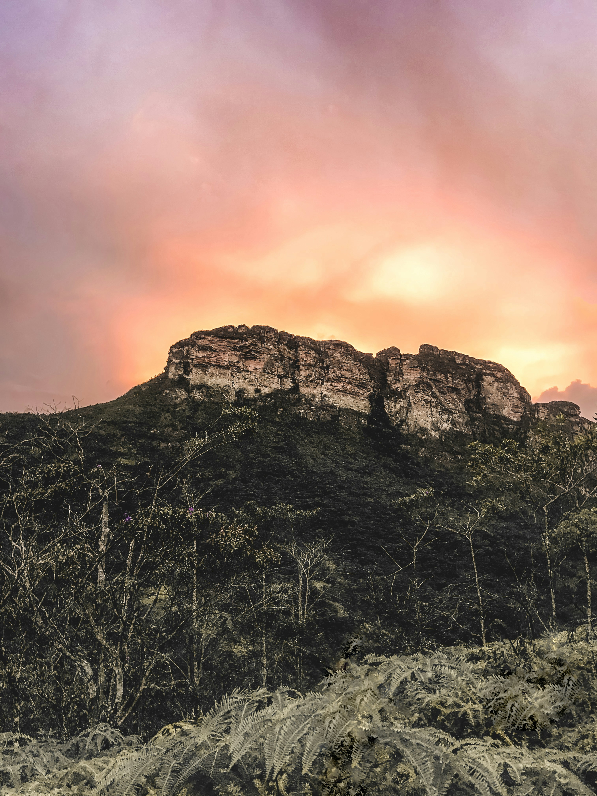

1. Praia do Rosa - Santa Catarina
Uma das baías mais belas do mundo, ideal para quem busca tranquilidade, belas paisagens marítimas e contato com a natureza.

Confira os locais mais procurados pelos nossos clientes e comece a planejar seu próximo passeio.
Uma das baías mais belas do mundo, ideal para quem busca tranquilidade, belas paisagens marítimas e contato com a natureza.

Perfeito para os amantes de ecoturismo, cachoeiras cristalinas e trilhas exuberantes no coração do cerrado brasileiro.

A Cidade Maravilhosa oferece uma combinação única de cultura, gastronomia, praias icônicas e pontos turísticos mundialmente conhecidos.